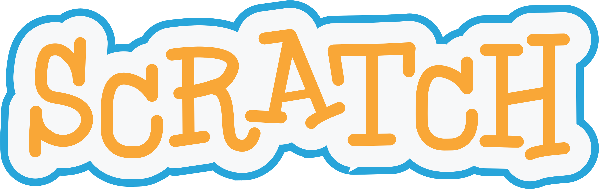
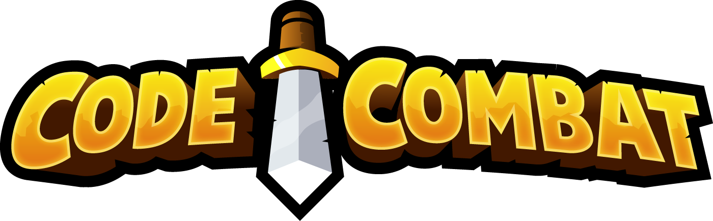
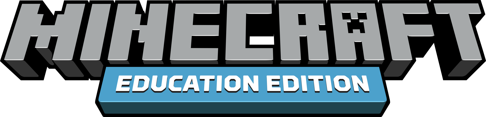
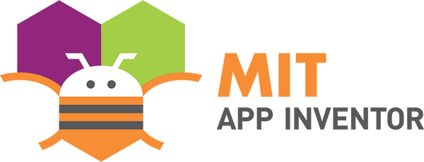

Podstawowa konstrukcja programów, ich kluczowe elementy (cykle, warunki, zmienne itp.) w postaci bloków przy pomocy 
Scratch to język programowania i społeczność internetowa, w której dzieci mogą programować i udostępniać interaktywne media, takie jak historie, gry i animacje z ludźmi z całego świata. Gdy dzieci tworzą w Scratchu, uczą się myśleć kreatywnie, współpracować i rozumować systematycznie.
Wprowadzenie dziecka w strukturę kodu i rozpoczęcie pracy z JavaScriptem w
Blockly Games to seria gier edukacyjnych, które uczą programowania i przeznaczone są dla dzieci, które nie miały wcześniejszego doświadczenia w programowaniu komputerowym. Pod koniec tych gier gracze są gotowi do używania konwencjonalnych języków tekstowych.
Pierwsze kroki w zrozumieniu programowania jako procesu i powierzchowna znajomość pierwszego języka - Javascript, z wykorzystaniem gier w

CodeCombat to platforma dla uczniów do nauki informatyki w trybie gry. Pokonaj ogry, aby nauczyć się języka Python lub JavaScript w tej epickiej grze w programowanie!
Wybierz swojego bohatera i zaprogramuj sobie drogę przez patrole ogrów, doły z lawą i promienie laserowe Lochu Kithgard. Zdobywaj kolejne poziomy, zdobywaj klejnoty i zbieraj magiczne przedmioty, aby odblokować nowe możliwości programowania!
Nauka tworzenia stron internetowych przez specjalne poziomy nauki HTML, CSS, Bootstrap i JQuery
Wygląda jak inna gra, ale nasi uczniowie staną przed odpowiedzialnym zadaniem zapobiegania pożarom lasu za pomocą programowania w

Minecraft: Education Edition to gra z otwartym światem, która uczy kreatywności, współpracy i rozwiązywania problemów w imersyjnym środowisku ograniczonym jedynie wyobraźnią graczy.
CO MOŻNA ROBIĆ W MINECRAFT: EDUCATION EDITION?
I ostatnia w tym module, ale nie mniej zabawna i interesująca: nauka tworzenia i programowania własnych programów na smartfony i tablety w

MIT App Inventor to intuicyjne wizualne środowisko programistyczne, które pozwala każdemu - nawet dzieciom - tworzyć w pełni funkcjonalne aplikacje na smartfony i tablety. Nowy w MIT App Inventor może uzyskać prostą pierwszą aplikację w mniej niż 30 minut!

HTML (ang. HyperText Markup Language) – hipertekstowy język znaczników, wykorzystywany do tworzenia dokumentów hipertekstowych.

CSS lub Kaskadowe arkusze stylów (ang. Cascading Style Sheets) – język służący do opisu formy prezentacji (wyświetlania) stron WWW. Arkusz stylów CSS to lista dyrektyw (tzw. reguł) ustalających w jaki sposób ma zostać wyświetlana przez przeglądarkę internetową zawartość wybranego elementu (lub elementów) (X)HTML lub XML.

JavaScript – skryptowy język programowania, stworzony przez firmę Netscape, najczęściej stosowany na stronach internetowych. Skrypty napisane na JS służą najczęściej do zapewnienia interakcji poprzez reagowanie na zdarzenia, walidacji danych wprowadzanych w formularzach lub tworzenia złożonych efektów wizualnych.

PHP – interpretowany, skryptowy język programowania zaprojektowany do generowania stron internetowych i budowania aplikacji webowych w czasie rzeczywistym.
PHP jest najczęściej stosowany do tworzenia skryptów po stronie serwera WWW, ale może być on również używany do przetwarzania danych z poziomu wiersza poleceń, a nawet do pisania programów pracujących w trybie graficznym.

SQL (ang. Structured Query Language) – strukturalny język zapytań używany do tworzenia, modyfikowania baz danych oraz do umieszczania i pobierania danych z baz danych.
Adobe Photoshop – program graficzny przeznaczony do tworzenia i obróbki grafiki rastrowej, będący flagowym produktem firmy Adobe Systems.
Adobe Illustrator – rozbudowany program graficzny przeznaczony do tworzenia i edycji grafiki wektorowej, będący jednym z flagowych produktów firmy Adobe Inc.
GIMP (ang. GNU Image Manipulation Program) – bezpłatny, otwartoźródłowy program do edycji grafiki rastrowej.
Pozwala na operacje takie jak m.in. retusz, skalowanie, rysowanie, dodawanie tekstu, umożliwiając pracę na warstwach i kanałach itd.
Inkscape – darmowy program do tworzenia grafiki wektorowej, stworzony w ramach projektu GNU.
Pozwala na tworzenie przede wszystkim symboli, znaków towarowych i logotypów produktów/firm/stowarzyszeń oraz tworzenie ikon czy postaci komiksowych.
ALBO

PHP, który jest przydatny do realizacji w naszych projektach baz danych
PHP jest najczęściej stosowany do tworzenia skryptów po stronie serwera WWW, ale może być on również używany do przetwarzania danych z poziomu wiersza poleceń, a nawet do pisania programów pracujących w trybie graficznym.

A także SQL (ang. Structured Query Language) – strukturalny język zapytań używany do tworzenia, modyfikowania baz danych oraz do umieszczania i pobierania danych z baz danych.
Pracować z bazami danych będziemy w aplikacji XAMPP – darmowy, wieloplatformowy serwer WWW typu "open source", który zawiera serwer HTTP Apache, bazę danych MariaDB, MySQL i interpretery skryptów dla języków programowania PHP i Perl, a także dodatkowe biblioteki, które umożliwiają uruchomienie pełnoprawnego serwera WWW.